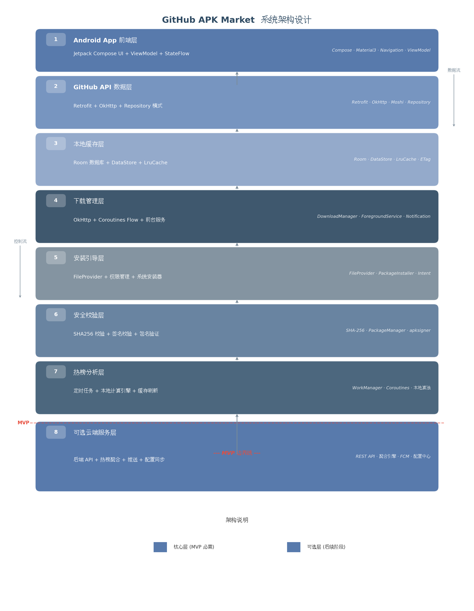
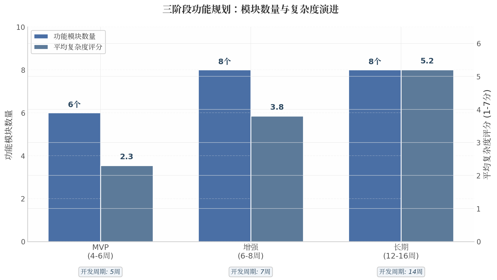

Trend
查看趋势
GitHub Trending
快速查看当天或本周热门项目，适合作为 Release 市场的趋势入口。
一个面向开源软件包的 Release 发现层：从趋势、Explore 和多代码平台搜索进入项目，再回到上游 Release、许可证、校验信息和官方下载链接。
首页现在把 GitHub Trending、GitHub Explore 和 GitMarket 多来源搜索并列呈现。前两个负责灵感和热点，GitMarket 负责把项目落到可下载、可验证的 Release 资产上。
快速查看当天或本周热门项目，适合作为 Release 市场的趋势入口。
从主题、集合和精选仓库进入，适合发现新类别和长期维护项目。
按关键词同时搜 GitHub、Gitee、GitCode，也可以锁定单一来源搜索。
页面采用分来源并发请求、分段渲染和折叠展开。没有关键词时每个来源只展示 10 条，搜索时默认展示 20 条，更多内容交给 Show more 或跳转源站。
优先使用公开 REST API，支持 Token 提升额度，适合作为主来源。
尝试公开搜索 API；遇到跨域或限制时降级为源站搜索链接。
作为补充来源接入；若公开接口受限，保留无阻塞的跳转搜索。

